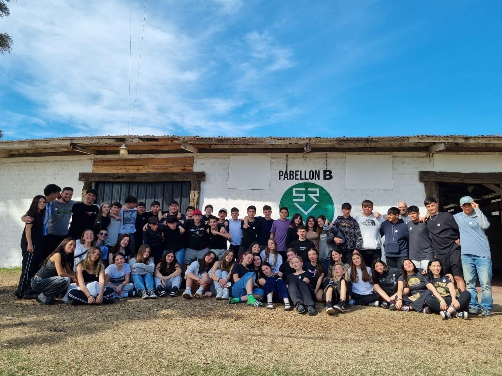

También creo que puedo adaptarme bastante bien cuando las cosas no salen como las había planeado o cuando tengo que cambiar una idea. Por eso podría tomar la habilidad de Adaptabilidad y Gestión del Cambio. Aunque al principio puede costarme aceptar que algo no va a salir de la manera que imaginaba, trato de buscar otra opción y seguir adelante en vez de quedarme con el problema. Una evidencia de esto son los diferentes trabajos y proyectos que hice durante el colegio. Muchas veces tuve una idea inicial y, después de empezar a trabajar, tuve que cambiarla porque no funcionaba. O también viajes y proyectos muy distintos a nuestra realidad, en los que te tenes que adaptar al cambio. Cómo Villaguay o mesa digna. Creo que esta habilidad es importante porque no siempre las cosas salen exactamente como uno espera. Poder adaptarme a los cambios me permite seguir trabajando, aprender de los errores y encontrar nuevas soluciones. También creo que es una habilidad que voy a necesitar mucho en el futuro, tanto en la universidad como en mi vida profesional.
Volver a las habilidades© 2026 - Mi Portfolio